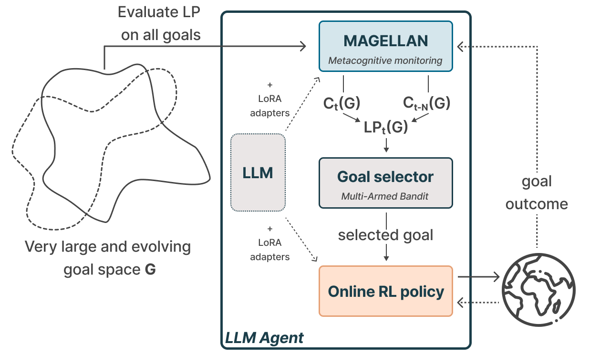
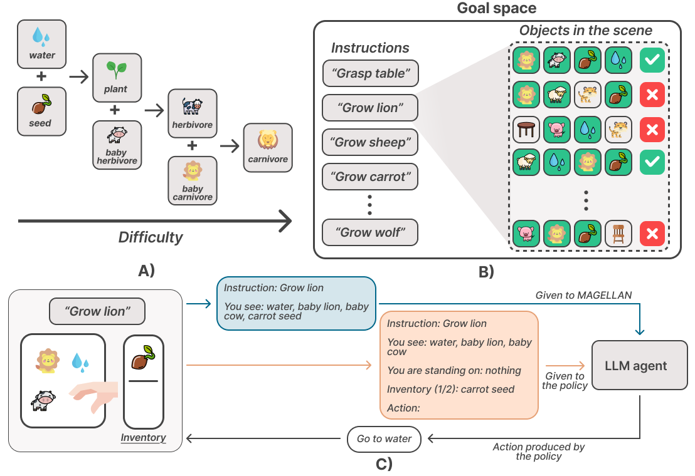
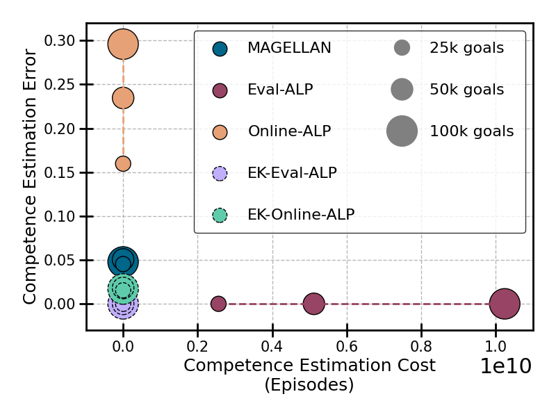
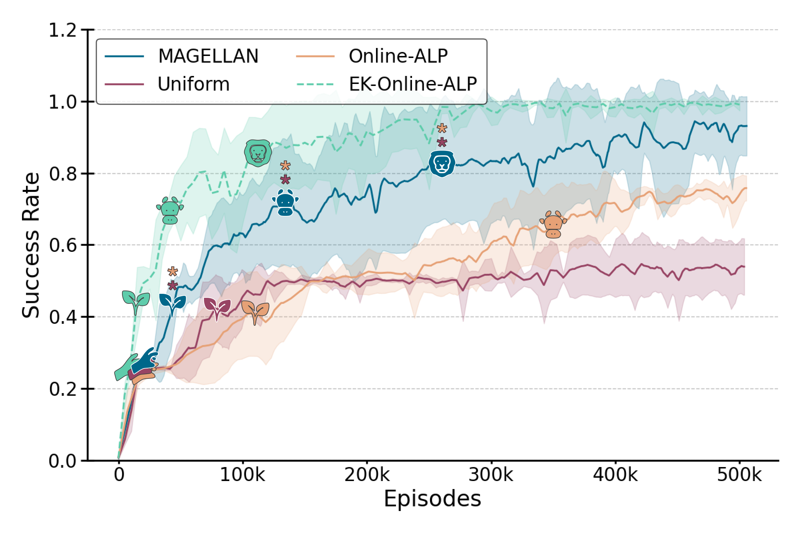
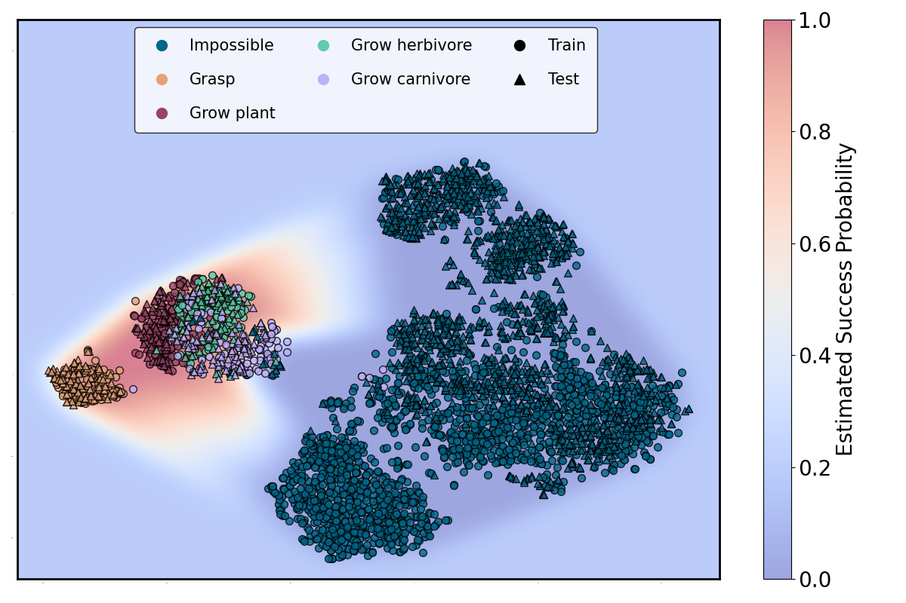
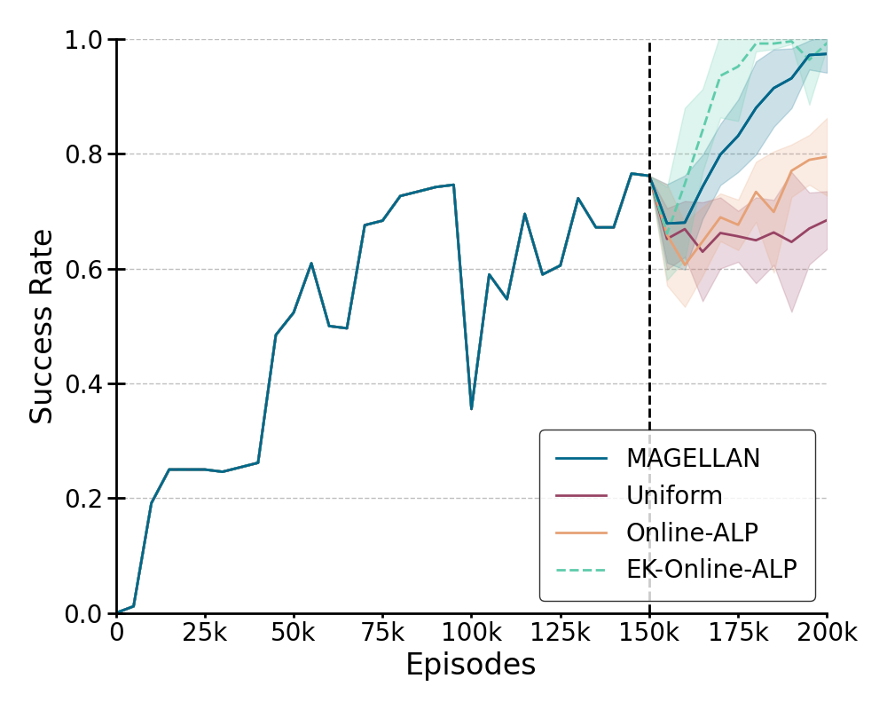

In open-ended learning, AI struggles with infinite goal spaces. Humans naturally prioritize learning based on progress, but can AI do the same?
We introduce 🧭MAGELLAN, a metacognitive framework that enables Large Language Model (LLM) agents to predict their own learning progress (LP) and build structured goal space representations. This allows for efficient exploration and mastery of vast, dynamic environments.

During training, our LLM agent uses MAGELLAN to estimate its past and current competence to compute absolute learning progress (ALP) on each goal. Given the per-goal ALP, the LLM agent's goal selector chooses the next goal to practice proportionally to their ALP. The LLM agent then performs a trajectory to achieve this goal and the outcome is used to update both the LLM agent with online RL and MAGELLAN's competence estimation.
To evaluate its capabilities, we trained an LLM agent in Little-Zoo, a fully text-based environment where observations, goals, and actions are all expressed in natural language.

A) Little-Zoo's tech tree. B) Little-Zoo's goal space is composed of all the possible combinations between instructions and objects that can be in the scene. Most object configurations make an instruction infeasible (e.g. "grow lion" is impossible with the second configuration, as water, needed to obtain plants, is missing). C) Little-Zoo provides a textual description that is given in our LLM agent's prompt.
🔗 Explore Little-Zoo
🧭MAGELLAN matches expert baselines in estimating competence over tens of thousands of goals—but with minimal cost & error! Unlike other methods, it efficiently tracks competence transfer across goal spaces.

🧭MAGELLAN autonomously discovers goal families (✊🌿🐮🦁) across 25k goals, performing on par with expert knowledge baselines—but without requiring predefined goal clusters! 🚀

By the end of training, 🧭MAGELLAN has structured the goal embedding space, consistently predicting success probability for unseen goals—a key step toward scalable open-ended learning!

When the goal space was entirely replaced with unseen goals, 🧭MAGELLAN generalized LP predictions and retained exceptional performance—matching baselines that rely on human expertise!
🧭MAGELLAN does more than predict LP—it also learns a structured, fine-grained representation of the goal space, opening doors for new research and applications.
This research demonstrates that 🧭MAGELLAN significantly outperforms prior methods, enabling AI agents to efficiently master large and evolving goal spaces—without requiring expert-defined groupings.
This is a step forward in scalable open-ended learning for AI.